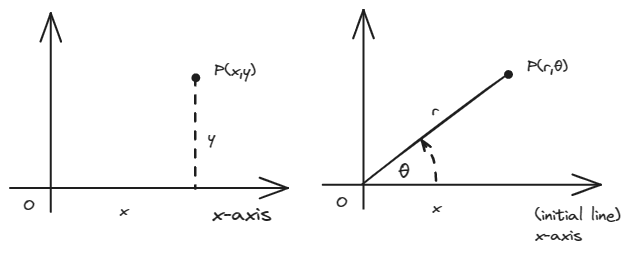

极坐标系和参数方程
极坐标系
点在极坐标下的表示

对于直角坐标系中的一个点P，我们可以使用有序实数对 唯一确定它的位置。
极坐标则是另外一种确定位置的方法：选取一点O为极点，OX为极轴，从OX旋转到OP的角度为 称为极角，最后测量OP之间的距离r称为极径，于是现在我们可以用有序数对 来表示点P的坐标了。
这里有几点需要注意：
- 直角坐标系中的任意一点都只有一种表达，但是在极坐标系中有无限种表达方式。因为角度是有周期的，所以对于极坐标中的一点 总可以表示为等价的 。但一般我们主值还是会选择 的取值。
- 极径可以是负数。极径和截距一样可以是负的，表示反向距离，也就是说一点同样可以表达为等价的 。
极坐标下的轨迹绘制
首先明确一点，我们画出来的那些封闭曲线是在直角坐标系下绘制的极坐标系下的图像。（好比说，你想想看以r为y轴， 为x轴， 难道不应该画出来一个余弦函数吗？？）想清楚这一点我们就可以开始了。
举个画三叶玫瑰线 的栗子。首先，从我们会的着手，画一张r的变化趋势图：

考虑一下r=0的情况。其实这个时候，比如 的位置上，我们要绘制一条直线，这条过原点的直线的极坐标方程将会是 。（因为r是不限的。）考虑一下，这其实不就是说该直线与我们所求的曲线相切吗？这样就很好办了，0和 的位置上都可以绘制出切线，然后r又是先增大后减小的，于是我们画出：

接下来的 里r是负的，又要怎么办？网上的建议是反向延长，其实我没办法很好地想象。可以尝试画出r为正的辅助线（加过绝对值的形态），再绘制一个中心对称的图形。所以会得到：

不过我觉得最好稍微注意一下曲线的走向。
一段一段补完这个图形，我们最终会得到：

没错，这就是三叶玫瑰线。只有三片叶子，事实上我们看到的每片花瓣都是两瓣花瓣重叠而成的。

多画几张图我们很容易发现：
-
奇函数（ ）只需绘制正半轴。因为 ，负半轴和正半轴的图形中心对称，画出来的会刚好重叠。
-
偶函数（ ）得到的图像上下两半是对称的。因为 ，r在 向正半轴和负半轴发展的过程中有着相同的变化趋势。

多画几张就能熟练掌握啦，非常好玩，快去试试吧(。・∀・)ノ
参数方程
有时候我们会引入一个新变量来表示一条曲线，这就有了参数方程。
除了一些非常基础的曲线，历年最常考的就是摆线和星形线，需要牢牢掌握；至于参数方程要怎么总体去研究，这似乎又是门挺大的学问了。
两种特殊曲线（一）：摆线

当一个圆沿一条定直线作纯滚动时，动圆圆周上一个定点的轨迹叫作摆线。
摆线的参数方程为：

很好算的自己算算就知道了（，注意 和 都是相对于圆心而言的不要找错了就行。
两种特殊曲线（二）：星形线
一个小圆在一个固定的大圆内部做纯滚动，如果大圆半径是小圆半径的4倍，那么小圆圆周上任一点M的轨迹称为星形线。

此轨迹方程的推导过程不做要求；表达式为：
若消去t，可得 的直角坐标系方程。
References
张宇考研数学基础讲义